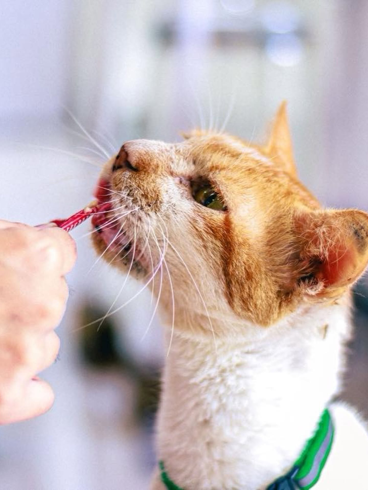

MANILA · BEST STUDY NOOK
Nekohige Cafe
Nekohige Cafe is my university-belt choice for a low-key study break with cats nearby. Its Japanese-inspired details, homey hobby-lounge atmosphere, and filling comfort food create a casual alternative to a formal restaurant. Ramen, curry, rice bowls, coffee, milk tea, and matcha make it especially practical for students who want an affordable meal and a calm place to unwind.
| Address | 2/F, 1173 Vicente Cruz Street corner Dapitan Street, Sampaloc, Manila |
|---|---|
| Opening hours | Check the café's latest official listing before visiting. |
| Menu style | Japanese comfort food, coffee, milk tea, and matcha |
| Best for | Students, quiet hangouts, and affordable meals |